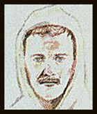
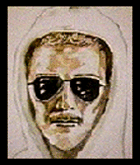
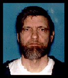
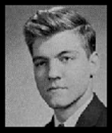
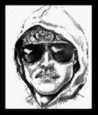
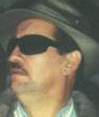
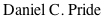

It is impossible to overstate the truly eternal and epic evil represented in the Unabomber case. It shaped the attitudes toward environmental issues for decades adding ridicule and derision of the most powerful sort. Backed by the CIA and its linked Petro powers, it provided the margin of difference and then some to elect greenhouse gas promoting George W Bush 4 years later, not environmentalist Al Gore. It went on to provide the basis for much of the anti-environmentalist propaganda and attitudes which dominated ecological debates since,... Eco-Nut, Eco-Terrorist, Tree Hugger, Enviro Wacho etc etc. It molded the debate, and reinforced and enabled environmental degredation at every level. The perpetrators of this penultimate crime against humanity bear much of the responsibility for the murder of not just one human or a few or six million, but of all life, and most likely forever. They are central figures in the silencing of the songbirds of earth,... forever. In 2000 the world still could have been saved from the Methane Discharge now mercilessly underway in the arctic as the summer of 2017 ominously approaches. 04/20/16
Understanding Unabom provides
in depth insight into the coordinated activities of elements of the FBI, NSA, and CIA before September 11th 2001. Activities that
included the manufacture and management of a
series of high profile, random terrorist events and selective assassinations. The case explodes the fiction that the FBI and the CIA did not Communicate in high profile cases. Ultimately, it exposes the deep common roots, and the common personnel of many different dirty cases tracing all the way back to Rumsfeld and Cheney's coverup of the Olsen murder during the Ford Administration. The facts of Unabom have been covered up in a blizzard of ridicule akin to Kennedy's
grassy knoll. Covered up, despite a wide trail of undeniable proof
and multiple witnesses.
They are presented here.
PHOTO-MORPH
FBI-COVER-UP
THE PARTY
WITNESS'S
BANK DEPOSIT
MIND CONTROL
Why ?
The only Unabom eyewitness rejected the first two sketches, but the FBI insisted on using them for seven years. They looked like Kaczynski...because they were designed to look like Kaczynski. The first Unabom sketches were actually computer morphed by the FBI from a Berkley photo of the Patsy. The eyewitness insisted on the third and final sketch by independent artist Jean Boylan (below right). The FBI stubbornly resisted for years then finally relented under pressure. It became the known sketch. You can not create the first two wanted posters from the patsy's photo, then 7 years later claim you did not know who he was. It is impossible. It conclusively proves a frame-up, proof printed in hundreds of national magazines [See Computer Morph]
The only eyewitness to see the bomber in action describes the FBI charade
"Heck, who am I? Just the witness," she asked and answered quietly in a single breath. "Never mind what I think I saw. They'll tell me what I saw, and when I tell them it's off base, they'll just tell me again. That drawing's never been right. I've tried to tell them." [Boylan's "Portraits Of Guilt" Chapter One] . The witness identity has never been revealed and no reaction to Kaczynski's arrest has ever been recorded. An unusual number of individuals cited on these pages are missing or dead under suspicious circumstances. (Witness Page).
|
Witness Rejected |
Ted Kaczynski |
Witness Rejected |
Ted Kaczynski |
|  |  |  | |
|
Morphed Sketch |
Morph Source |
Second Morph |
Mid-Life |
|  |  |  |
|
Ted Kaczynski |
Boylan Sketch |
J Ray Dettling |
Enlarge the FBI Sketch and Decide for Yourself if it was
Morphed
from Ted Kaczynski's Photograph !!!
[See Computer Morph]
CD Burnable Site Download
Site Page Rank
DECLARATION
OF

I do hereby depose and swear;
The Nathan R note was a handwritten note... written on the envelope of the June 1992 letter sent by the Unabomber to the NY Times. The Nathan R note is a phone note written in my handwriting by me. [Polygraph] The letter inside the envelope pre-announced the Epstein and Gelernter bombs. [See Note and Handwriting Samples] The bombs went off after the letter was posted, and before it was delivered... to the NY Times. I wrote the "Nathan R" note, while sitting at J Ray Dettling's desk in Saratoga California, to record a call from Nathan Salmon to J Ray Dettling. [LA Times] I wrote the note using a Pen which had no ink and later recopied the message to give to Dettling. Nathan Salmon is Dettling's common law stepson from his relationship with Tessie Ann Salmon. [Grant Deed] [PI Report] I clearly remember the call [Houston Chronicle] and the act of writing of the note itself. Three former associates recognize the handwriting in the note as being similar to my handwriting. [College Roommates E-Mail] The format of the note is the exact same format I used to record calls at the Bohlman road residence (Call X followed by an initial for the person followed by the date and time the call was received). After initially reading the typewritten text of the Nathan R note (R for Ray) on the Internet, I immediately recognized the notes format and informed an aid to US Senator Max Baucus (Greg Devlin, Polson Mt) that the note would be in my handwriting and that it was recorded with a pen without ink. This later was confirmed. It was in my handwriting, and in a pen without Ink. The call was the only time I ever talked to Nathan. During the call I had assumed I was talking to Dettling's other son Aaron, age 14. Nathan's abruptness and commanding impatience at my inability to find a working pen made the call confusing and memorable. The call was a long distance call received in October or November of 1992 on a Wednesday at 7 pm. When asked for a number Nathan said that he would be where Ray would know the number. Handwritten examples describing [The Call] and [Manifesto Night]
One evening in October of 1992 Michael Hren and I read parts of the Unabomber Manifesto on Dettling's computer (three years before it was mailed to the New York Times) and discussed it extensively with Dettling. Dettling arrived home while Hren and I were examining the manifesto, just as I had used the search command on the word "kill" [Polygraph] to locate the sentence:
"In order to get our message before the public with some chance of making a lasting impression, we've had to kill people." [Unabomber Manifesto Paragraph p96]
Hren immediately asked Dettling in a booming voice, "Hey Ray who'd you kill", intending a joke. Michael Hren reluctantly remembers the incident [Voice Call], but clearly recognizes one line [Voice Call] of the Manifesto from that night [Hren's Statement]. When asked what the document was, Dettling stated that "it was a work of fiction about a serial bomber". Later during a conversation about the Unabomber in Hren's presence, he cited four instances of Unabomber bombs, defending each. The first three examples seemed ludicrous to me, particularly the example of the computer store owner and my reaction was sarcastic "Great reason to bomb someone" I commented. I was shocked and vividly remember his apparent glee and approval attached to the bombings. His fourth instance of Unabomber bombings was a timber lobbyist, citing the timber industry actions on Redwoods as a justification. The justification was a continuance of a prior conversation. [Polygraph]. Sacramento timber lobbyist Gil Murray was murdered two years later by a Unabomber bomb. During this incident Dettling had just returned from an evening out, was intoxicated and highly animated. Calls were recorded in Colorado and are legally admissible.
Patents were used for years for a paper trail cover for "black" operations payments by the CIA to avoid complications with IRS etc. For example...when the IRS asked "Where'd ya get the million bucks?".... "For Murder" was not an acceptable paper trail for a CIA operative. Over the years they used Patents instead...until recently, the most confusing and intractable paper source in existence. Dettling's residence was a palatial multi-million dollar mountaintop complex with 12-foot window panels overlooking Silicon Valley. Dettling drove a rare and expensive car. His closet had over a dozen high quality fur coats as gifts. [Photo] He spent money freely. [Phone Call] But Dettling had no substantial job for many years, and no identifiable source of income other than five US Patents. The Patents trace (via Assignee) to companies involved in supplying the Military, CIA and Intelligence agencies (United Technologies, MB Associates etc. [Mitchel Page Resume] and to NASA (See also: [Plain Dealer]). It is my opinion that Dettling did not have adequate scientific knowledge or abilities to create the concepts described by the Patents. (Patents [3,771,152], see also [3,873,892], 3,979,052, [3,979,052-2], [4,021,267], and NASA Patent [4,146,180]).
In June of 2000, Harvard University Invoices also linked Kaczynski to the CIA [LA Times] as a subject in the CIA Mind Control Program MK-Ultra. The brilliant awkward 16 year old Kaczynski met with Henry A Murray (of Mk-Ultra LSD Scandal fame) in 1959 on his third day at Harvard and every week thereafter. [Atlantic Monthly][Net] Interestingly, Ted Kaczynski's Mk-Ultra Codename was "Lawful"...mind control slang for "Eureka here's our guy" ! The public has never heard Ted Kaczynski's voice to date, nor seen him speak. The murder of MK-Ultra scientist Frank Olson was later covered up by Donald Rumsfeld and Cheney [Rumsfeld]
Dettling's garage was a extensive wood and metal working shop. In the middle of the garage was a large pile of unusual wooden objects hidden under a large blue tarp. During a Wine Bottling party in the garage I pulled a large wooden gear from underneath the tarp and asked Ray what it was. He did not answer, but when asked what it did, he took a serrated wooden board, placed it against the gear and said, "it turns". When he thought none of the six other people present were looking, he attempted to remove the wire, which was attached to one of the gear teeth by an oval bronze plate. His movements attracted everyone's attention. He then made a highly memorable and exaggerated show of trying to remove the wire in front of six people. Michael Hren remembers the incident and has with great reluctance stated, "He would recognize the gear if anyone showed him a picture of the Unabomber bomb gear" [Phone Call]. The garage also contained a copy of a road hazard bomb [My Sketch] similar to the one that injured Gary Wright [Washington Post]. The prominently displayed item in the garage consisted of two 2x4's with a crown of nails in the middle and a rectangular hole (2x8) chiseled/carved in the board underneath the crown of nails. The garage also contained an exact duplicate of the Epstein/Gelernter ignition switch's [CNN Photo]. I held the switch in my hand and played with the lever during the Wooden Gear Party... one year before the Gelernter device was sent. Not detailed in the photo of the bomb residue is the fact that the switch had three positions and distinctively "boinged like the end of a swimming pool diving board" when the lever was pushed to the middle position (fluctuated back and forth). Upon seeing a photograph of the switch after the bombing, I immediately recognized the pattern of the wood in the switch body as well as the switch itself in every detail. (Future Polygraph). During the same party a number of photographs were taken of the participants. In one of the photos Dettling posed with an incendiary device called a fire stick [Photo] similar to one used in an incendiary attack in New York City [USA Today] which occurred during the same week as a recognized Unabomber attack. Attacks historically came in pairs [USA Today] . One fire stick victim was permanently paralyzed by the attack. Assorted other items related to Unabom devices including grooved wooden dowel actuators were also identified from the Garage.
Dettling and I often argued technology issues. Most of the points of view of the manifesto were very familiar to me. I immediately recognized a dozen points of debate just from the New York Times Summary of the Manifesto. Dettling on several occasions argued these points in public in the Bank Bar in Saratoga. During conversations at the Bank Bar, he often seemed to apply the personality archetypes in the Manifesto to Bar regulars in conversations. (Jim was the Liberal, John the Conservative etc) The Manifesto's point that " the technological elite may simply decide to do away with the technologically disenfranchised" [Phone Call] was repeated often and in public. [Unabomber Manifesto p174] The Aug 1995 New York Times article extracting manifesto sample quotes was a virtual list of his favorite sayings.
No Federal law enforcement agent has ever interviewed Hren, myself or anyone else [Phone Call] concerning the wooden gear, the manifesto, the other bomb parts in the garage, pre-naming a bombing victim, the Nathan R note, or anything else despite repeated insistent requests which started 6 months before they supposedly ever heard of Kaczynski. In August 1995 the authorities were supposedly still expecting an airliner to be bombed by the Unabomber [LA Times] and were frantically rerouting and delaying the US Mail. At that point in time I called in a report that "I recognized the Manifesto... I had read it with another possible witness" and gave them Hren's work phone number at Apple computer. To this day they have not investigated my initial report. Additionally, it is almost humorous that the FBI would interview 10,000 Nathans [NY Times] " (on overtime no doubt) and refuse to interview the Man who passed a polygraph saying he wrote it, who also provided documentation of who Nathan was, and who also supplied anecdotal handwriting recognition by numerous disinterested third parties......I think something is wrong here :)
One evening during the fall of 1992, Dettling asked me to lick some stamps. I said, "Lick your own stamps". He insisted, stating that "they are made of horse hooves and pigs feet and it really grosses me out". Despite the oddity of the request, I licked several long strings of stamps that he applied to a heavily taped manila package. Prior to this Dettling had asked everyone in the complex how you use stamps that are less than the current rate, and was told by nearly everyone several times that you just add small denomination stamps. Several days later Dettling showed off a heavily taped package to Hren and I. We both handled it. Hren asked him what it was. He replied "it was just stuff". When Hren attempted to shake it, Dettling reacted visibly saying it was "fragile". It weighted about 5-7 pounds. Because of these events, I independently (with Luckiew's assistance in 1996), examined stamp books to identify the stamps which resided in Dettling's desk drawer. They were issue #2280, which is an American Flag over a gray Yosemite. Issue #2280 apparently does not match Unabomber trial evidence (revealed after my report to the FBI). Trial evidence noted 4 different types of American flag stamps, none of which were #2280. Dozens of 2280 stamps and a few loose O'Neil [Denver Post] and Hemmingway stamps resided in the center desk drawer. A box which sat on the corner of the desk for months, was identical in size, shape, label and wrapping to one used in the bombing murder of Federal Judge Robert Vance [Inspector General Report], which also used the same issue of stamp (#2280). Judge Robert Vance [Hero's Photo] was an appeals judge with a reputation for dogmatic honesty primarily hearing Drug Cases out of Miami [Toronto Star] , several of which claimed to implicate the CIA in drug trafficking. Significantly, a cardboard box with a painted black interior (ala the VANPAC device) resided near the road hazard bomb in the garage (3 years after the VANPAC affair). A 4" square iron plate with a lighter colored thin metal rod vertical to the center (ala the VANPAC endplates) also resided nearby [Atlanta Journal] (See Wooden Gear Party). I first became aware of a possible VANPAC connection in November of 2000 when I saw the actual VANPAC bomb on TV and recognized it as identical to the box which had resided on Dettling's desk for months, however records will show that I very accurately described the box in letters to San Jose Detective Art Kirts as early as 1995. Ultimately seven disparate points of recognition surfaced in reference to the VANPAC device; size, shape, wrapping, label, stamps, black painted interior surface of a cardboard box, and iron endplate with welded vertical steel rod. At one point during the many hours I spent in his office, I noted that the box which sat on Dettling's desk was addressed to a Judge, but I can not recall the name or address specifically. At that time I assumed the package must be related to one of his patents/inventions and was surprised by the southern address (I was aware that there was a special patent court in DC). Testimonial Evidence of a government directed cover-up [Atlanta Journal] of the murder of Judge Robert Vance later surfaced in federal appeals court testimony. The prosecutor in the VANPAC case, prior to his appointment to head the FBI as FBI Director, was Louis Freeh. Recently, FBI agent Thurman's fabrication of evidence in the VANPAC case against Moody was accepted as impeachment of Thurman's testimony in the Lockerby Case. FBI Agent Frederick Whitehurst's congressional report also accused agent Thurman of fabricating evidence [DOJ] in the murder of Judge Robert Vance [Le Monde] Additional evidence surfaced in the TWA800 bombing case against Thurman. [Flight 800: The Missing Evidence] [Net] J. Thomas Thurman was "suspended" from the FBI in 1997. It would be interesting to see how he lives today. [VANPAC News History] See also: In Search of Justice
In June of 1993 the Unabomber gave a secret number formatted as a social security number as his identifying code to avoid imitators speaking for him. The individual whose social security number matched the ID [LA Times] was a 23 year old man with a criminal record who had a tattoo on his left arm, which said Purewoods (or in some reports Pure Wood), and was in Jail during one of the bombings. During a party to bottle a barrel of wine, one of the photos is of a tenant named Sean [Photo] who had a Purewoods tattoo on his left arm and a prior criminal record. The individual with the Social Security Number was ruled out as the Unabomber because he was in Jail during one of the bombings in June 1993. Sean was in an auto incident in the Palo Alto area in the spring of 1993, during which he fled, and it is assumed, was later incarcerated. However, Dettling was also incarcerated on a traffic situation in the early spring of 1993, and Pure Wood is apparently a common racist tattoo. Whoever the individual is, the individual must have been close enough to the Unabomber for the bomber to get his SS#. Sean filled out a rental application at Dettling's house, and left on very bad terms including an accusation of tool theft. The individual disappeared shortly after being interviewed by the FBI [NY Times], but probably mentioned the event to friends. What if Sean had "put it together" during the interview, had he "cased" the garage, gaining knowledge to his detriment?
During the 1992 conversation about the manifesto between Hren, Dettling, and Myself, Dettling asked me that since I was from Montana (My car had Montana Plates at the time) did I know Ted X. I cannot recall the last name he stated, but I clearly remember initially thinking of Ted Vaughn. Ted Vaughn [Alumni Bulletin] was North Yarmouth Academy class of 67 with my brother. Vaughn returned from Montana with pictures of the state my Freshman Year, and my family wound up vacationing and later moving there for a time. I have thereafter always associated Ted Vaughn with Montana. Since the last name he used was clearly not Vaughn, I replied no, I did not know the person. Dettling then responded in an offhand manner that "some guy named Ted X in Montana writes this stuff" His comments were in passing but left the clear impression that he did not know Kaczynski personally [Polygraph]. During the same conversation he also discussed Earth First, however again, I did not sense any personal connection with the organization on his part.
Dettlings house included a separate building with a soundproof band room downstairs and an apartment upstairs. The walls of the band room (particularly the right wall) were speckled with irregular holes, which clearly appeared to be shrapnel from one or more explosions. I have tape recorded a conversation [Phone Call] with another former tenant (Jackie Miller) who also remembers the shrapnel. Hard evidence may still exist at this location. Dettling's mansion was party central. During the five months I lived there at least 50 people spent entire evenings in this room and band practice was held there regularly. In 1995 the Unabomber complained about problems finding a location [London Times] to test his devices.
One afternoon in the fall of 1992 Dettling invited Doug Gondor and I into the Master Suite to watch a the movie "Nighthawks" on a VCR starring Sylvester Stallone and Rutger Hauer [Nighthawks]. The Movie was about a terrorist who tried and failed to have a manifesto published by the New York Times and the Washington Post. Given the fact that the Unabomber manifesto was published in both papers three years later the incident is intriguing. Others were probably shown the same movie by Dettling at other times. It is similarly noteworthy that the Nathan R note was written in Oct of 1992, but did not arrive at the New York Times until June of 1993. Several Unabom devices had addresses which were a year or more out of date. Doug Gondor died the day after meeting with Marcus Bryant, a close Dettling associate, at his home in Grants Pass Oregon under circumstances some family members considered highly suspicous. Cremation occured despite a request for an autopsy.
During a conversation in Dettling's living room with six people present, one of the other tenants (Sean), was discussing a crime on TV news about an unusual murder with some admiration. Dettling stated that that was a stupid way to kill someone, that the smart way to do it was to Mickey them with a chemical that contained the words "Methyl-Methane", which would cause them to die of cancer with no one the wiser. He gave a long detailed description of its gruesome effects, that it would embed into the tissues and by irritation over time cause cancer. The sophisticated sounding name created an hysterical reaction among the listeners, especially when I stated that it sounded like "shit on speed". It seemed outrageously ludicrous at the time. The term "Shit on Speed" became a household joke for several weeks thereafter. The Isopropyltrimethylmethane chemical cited in the manifesto does not exist [Unabomber Manifesto p87]. (i.e. Methyl for Meth or speed, Methane for shit). Sean, his girlfriend Reann, Hren, and Doug, Dettling and I were present.
Dettling's center desk drawer contained a stack of approximately 100 sheets of carbon paper, which were heavily used. I was very curious about this in an office that contained a computer, laser printer and a photocopier. Finding it humorous that "Mr. Science" was still using carbon paper, I showed them to Hren on one occasion and Hren examined them and remarked that they showed a number of words which were heavily XXX'd out. Copies of the manifesto were distributed by the bomber on carbon paper copies with numerous errors. [LA Times] Melanie, a girlfriend of Rays, made an offhand comment about Ray's crazy typing to me on one occasion. She may have been present at some point during the creation of the Manifesto.
Dettling often repeated a joke several times, in front of numerous people, often in public circumstances in 1992 and 1993... The "joke" went "I am going to start a terrorist group called the Fucking Cunts [LA Times] because its so crazy no one will ever believe it". Roommate Jackie Miller remembers hearing this joke. [Phone Call] The letters "FC" were a recognizable trademark of Unabomber bombs.
Dettling had three wigs in his lower right hand desk drawer, which matched the hair in the sketch. They were curly locks approximately the same length as the hair in the sketch (blond, brown, and black). During a party in his office, I removed the wigs and made fun of him in front of two other people (Hren and Michelle). Ray put on one of the wigs and a false mustache and danced around the room in a parody of a gay person to everyone's amusement. Given Dettlings similarity to the sketch the wigs complete the picture [Photo].
On one occasion I observed Dettling parading around the complex in a white robe and hood wearing dark aviator glasses and a wig, which appears in memory to match the sketch. It was during one of those periods when he holed up in the office/bedroom area of the complex for several days. I do not think he knew anyone was home at the time. I was in the TV area of the living room when he came down to get something from the fridge. As it looked very odd I laughed and said "What's this?". [Photo] I did not hear his response, he promptly returned upstairs with the food. The white garment looked like a terry cloth boxers or karate outfit coming down to the thighs, not a full length garment, but longer than a sweatshirt with hood. On another occasion, Dettling came down to the pool area to join several people in the Hot tub wearing both the hood and the glasses, however, without the wig, it seemed relatively normal and I don't think anyone noticed.
Mike Hren often took photos around the complex. On at least one occasion Dettling strenuously objected to photos being taken in the office. Hren has been unable to locate those and other photos taken at the residence. I have recorded a conversation where he indicates that he recalls his room being broken into on several occasions and his photos being rifled through. Hren was able to find just one roll of film taken at the house [Phone Call], which contained photos of several witnesses at the "Wooden Gear Party". During the time I lived there Dettling's house was for sale. On several occasions local Realtors walked through the house taking photos when Dettling was not home.
Dettling had a photo of himself and his wife (common law) taken during a ski trip to the Swiss Alps prominently displayed in his office. In the photo he is wearing aviator glasses with a hood, taken from the same angle represented in the sketch. The photo sans the Alps is identical to the Unabomber sketch. Jackie Miller also recalls the photo [Phone Call].
Dettling's center desk drawer contained an unusual pin [Diagram], which I often played or fiddled with while waiting for his computer to compile database indexes. It was unusual, interactive and a great pacifier. It was made of a very light metal (Cast Aluminum ?) (Jet Engine Pin?) with a square rectangular head and an off-center hole in the shaft with a wire loop through it. The wire behaved strangely because of the off-center hole, hanging freely on one side, but when pushed over the head (by sharply distending the wire circle to an oval), exhibiting resistance when approaching the shaft on the other side ("the pacifier effect"). The shaft of the pin was flattened at the lower end, and the letters FC appeared in Raised type [LA Times] on the flattened edge. The Shaft was approximately 4" long. Once when I was reexamining it for the umpteenth time, I dubbed it "Rays Fucking Cunts Pin", in my mind because of the frequency of the Joke. I couldn't for the life of me see how it would be used or what purpose the round wire filled other than to bounce off the shaft and entertain me. Actually, I still can't :). The pin may be related to the Task force's interest in cast aluminum [SF Chronicle].
On several occasions during the time I lived there I observed a strange behavior sequence in Ray. He would first say he was going to do something completely outrageous (i.e. smash something valuable) then say "I was just kidding". He invariably then went ahead and did it, then followed with the statement "so I lied". Each time he said, "so I lied" it was invariably accompanied by a characteristic and memorable shrug of the shoulders with palms raised "so I lied" (always in the same manner palms up shoulder height). The almost exact re-occurrence of the gesture was distinct. Once he smashed an expensive etched crystal storm lamp in this manner in front of four people in his office to their shock and amazement (Gerald, Tony, Michelle, and myself). The similarity to the published threats in California to blow up an airplane followed by the Unabomber response of "Just kidding" was striking at the time [LA Times]. No Airplane crash was ever linked to the Airplane Mail Bomb threat but it nevertheless provided a personal source of anxiety and hysteria on several occasions in the following years.
My primary concerns in the matter are public safety, personal safety, and that the truth of Mr. Kaczynski's involvement or non involvement in these matters be brought out. I am particularly concerned with the possibility that one, or perhaps many more individuals may die if the truth of this case is not brought out. I am also alarmed at the pattern of government conduct in the case in the context of a Democratic government. I therefore hereby foreswear and forsake any claim on the rewards which have been offered by the government in this case.
Declared under penalty of perjury that the foregoing is true and correct
Executed this 7 th day of June 1997
Amended this 11th day of November 2000
PHOTO MORPH FBI COVER-UP THE PARTY WITNESS LIST BANK DEPOSIT MIND CONTROL NEWS
Cool Sound bite
FBI as HAL in 2001
VANPAC Newspaper History
Unabomber Newspaper History
You can help expose the Charade!
Paste the links below on to your home page or site
It will increase the visibility of this site in Search Engine Listings !
FBI Conspiracy Morph Arson Baucus MKUltra Anthrax 911 MKUltra Saratoga NAACP Jeanne Boylan Los Altos Bar Terrorist Mercury News Meth Charles Grassley Mind Control Echelon National Security Agency Walter Leroy Moody VanPac West Seattle ID Theft Max Baucus SW Plumbing Id Theft Gelernter Brainwashing Unabomber Joint Terrorism Task Force Matteucci Handwriting Analysis Realtor NSA Lisa Chase Robert Vance Reporter Mail Bomb CIA Brainwashing Whitehurst Report Senator James Jeffords Senator Patrick Leahy Orrin Hatch Senator Charles Schumer Robert Hanssen Dickinson Louis Freeh Mitch McConnell Senator Arlen Specter Senator Russell Feingold Wen Ho Lee Janet Reno FBI Most Wanted FBI File Dickinson Richard Shelby Carl Levin Manchurian Candidate 9/11 Truth Porter Goss, Rumsfeld Links twa800
Site Keys: Louis Freeh, Ted Banks, Unabomber, Bomb FBI F.B.I. CIA C.I.A. NSA N.S.A. Echelon Judge Robert Vance Vanpac Unabom NSA, National Security Agency, Echelon, N.S.A., Unabomber Nathan R note Patent MKUltra MindControl Mind Control Road Hazard United States Attorney sherry Matteucci Senator Max Baucus Terror Terrorist Bomb Incendiary attack Fire stick, NSA, National Security Agency, Echelon, N.S.A., Firestick Saratoga Polson Mt Flathead Lake Freeman Roundup Unabom bomb Unabomber FBI CIA NSA Incendiary Device Firestick attack bomb murder Judge Robert Vance Haddock Arlen Specter Mitch McConnell Senator Patrick Leahy Orrin Hatch Charles Schumer James Jeffords Janet Reno FBI Most Wanted bomb CIA Murder Crime MKUltra Boylan sketch artist Crime sketch Unabomber Unabom, NSA, National Security Agency, Echelon, N.S.A., Government bomb Gezer Solomon Salmon Allegheny College Meadville North Yarmouth Academy Tom Fleming Jerry Garcia Grateful Dead Helix technologies NASA Gil Murray Sacramento Unabom Bomb Unabomber, Ten Most Wanted, Manchurian Candidate
Contact: Webmaster